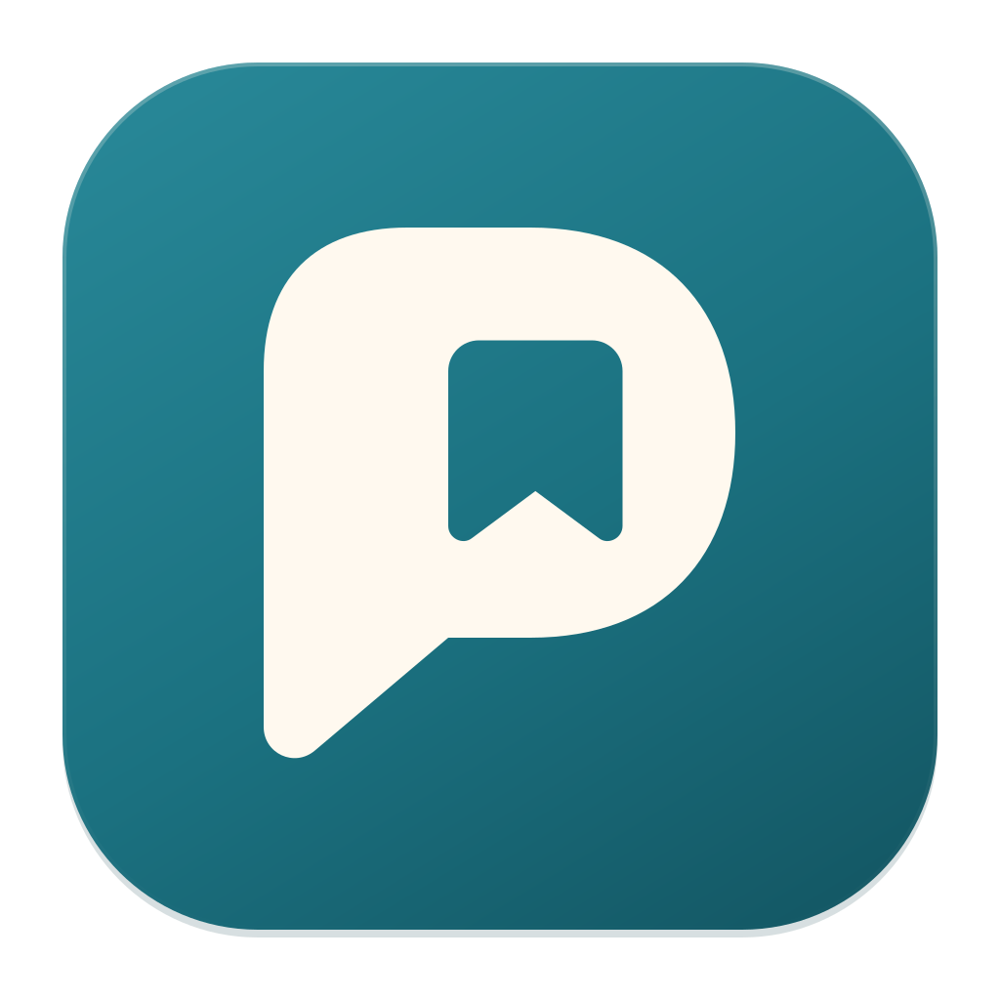

Keep the conversation.
Record microphone and computer audio, or import an existing recording. Your audio, transcripts and notes live in your Mac’s library.

PatterYour conversations, kept close.
A personal meeting notebook for Mac. Keep the recording, find the words, and turn a conversation into something you can come back to.
Apple Silicon · macOS 15 or later · Personal development app
Record microphone and computer audio, or import an existing recording. Your audio, transcripts and notes live in your Mac’s library.
Transcribe with local models and generate summaries through your local model server. Choose a summary template that suits the conversation.
Search, revisit earlier versions, and archive without deleting. Patter does not automatically purge your recordings or conversation history.
Optional Google Drive backup
Connect your own Google Drive to back up recordings, transcripts, generated summaries, version history and nonsecret settings. Choose a nightly time, or back up manually.
Patter requests access only to files it creates or that you explicitly open with it. Backup files stay in your private Patter Backups folder unless you change their sharing in Drive. They are readable files, without extra encryption from Patter.
Available in Patter v0.4.0. After an app update, reconnect Google Drive if prompted; keep your Google setup JSON available.
How Patter handles your data →Patter is a personal project by Thomas Auger, inspired by Anarlog and built for macOS. There is no Patter account, hosted processing service or analytics. Calendar integration reads calendars already connected to your Mac.